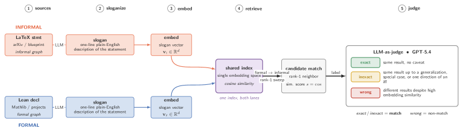
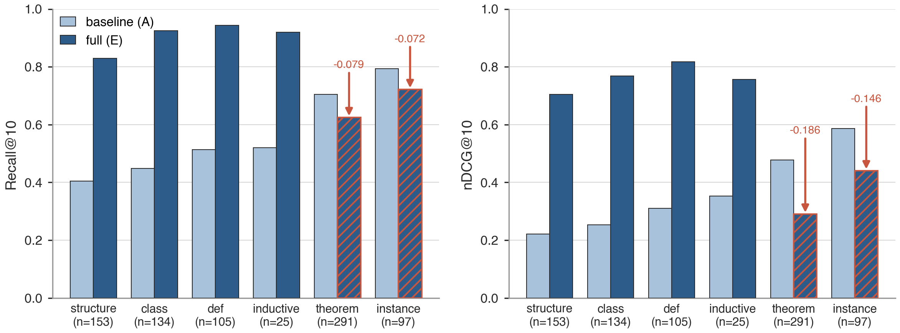

Introduces LeanGraph, an elaborator-level dependency extractor producing 388K nodes and 11.3M edges across 25 Lean projects.
Abstract
Mathematical knowledge is organized around statements and their dependencies, but this structure is exposed unevenly: informal papers cite mostly at the document level, while formal libraries record fine-grained dependencies over a much smaller body of mathematics. We introduce TheoremGraph, a unified statement-level dependency graph spanning both informal and formal mathematics. On the informal side, we parse 11.7M theorem-like environments from mathematics arXiv and recover 18.3M candidate directed dependencies, each labeled by the extractor that proposed it so downstream users can trade coverage for precision. On the formal side, we release LeanGraph, a Lean 4 elaborator-level extractor producing 388,105 declaration nodes and 11.3M typed edges across 25 Lean projects. We bridge the two graphs by embedding generated natural-language slogans into a shared semantic space, linking related statements across papers and across the informal/formal divide; an LLM judge affirms 47,952 such matches above a 0.8 cosine floor, with the judge-acceptance rate rising from 48% across the floor to 87% in the >=0.9 tier. On formal concept retrieval, our name-and-signature representation with graph expansion comes within 0.5pp of LeanSearch v2's reranked Recall@10 (0.775 vs. 0.780) without an LM reranker. We release the dataset, extractors, HTTP API, and MCP interface as infrastructure for mathematical search, attribution, and retrieval-augmented reasoning, available at theoremsearch.com and huggingface.co/datasets/uw-math-ai/theorem-matching.
Problem
Mathematical knowledge dependencies are fragmented: informal papers cite at document level while formal libraries record fine-grained dependencies over a smaller body.
Approach
TheoremGraph unifies informal and formal mathematics. On the informal side, 11.7M theorem-like environments are parsed from arXiv with 18.3M candidate dependencies. On the formal side, LeanGraph extracts 388K declaration nodes and 11.3M typed edges from 25 Lean projects at the elaborator level. Slogans embedded in a shared semantic space bridge the two graphs, with an LLM judge verifying 47,952 matches above 0.8 cosine.

Figure 1: The matching pipeline. Lean declarations and L a T e X statements are each sloganized and embedded into one shared index; a formal \to informal rank-1 cosine query proposes candidate matches, which a single GPT-5.4 judge labels exact / inexact / wrong ( exact / inexact count as matches).
Results
On formal concept retrieval, their name-and-signature representation with graph expansion reaches within 0.5pp of LeanSearch v2's reranked Recall@10 (0.775 vs. 0.780) without an LM reranker. The judge-acceptance rate rises from 48% at the cosine floor to 87% in the >=0.9 tier.

Figure 5: MathlibQR fair-810, Recall@10 by declaration kind, comparing the baseline (Config A) with the full lever stack (Config E). The interventions concentrate their gains on declarations identified mainly by name (structures, classes, definitions, and inductives), while theorem and instance , which usually already carry descriptive slogans, decline slightly. Configurations are defined in Table